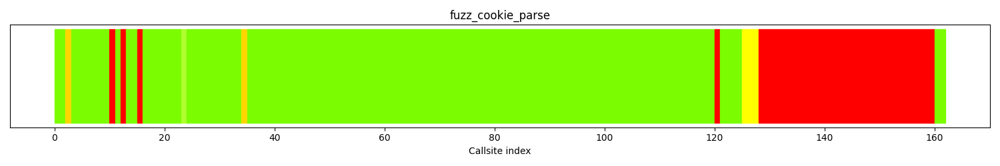
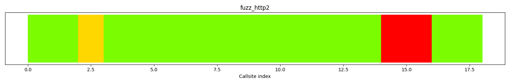
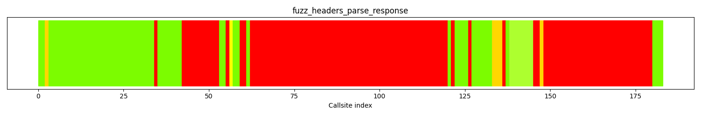
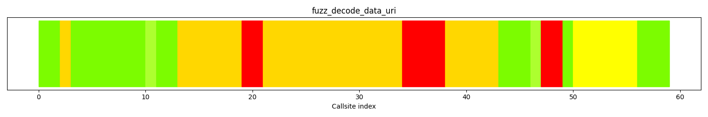
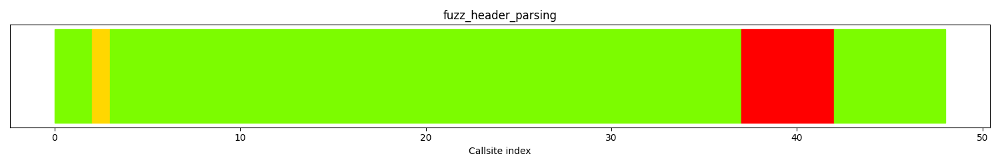
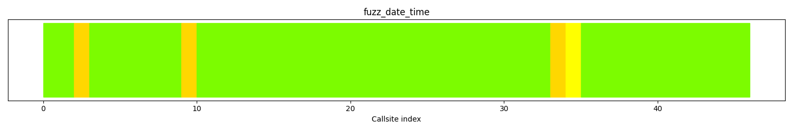
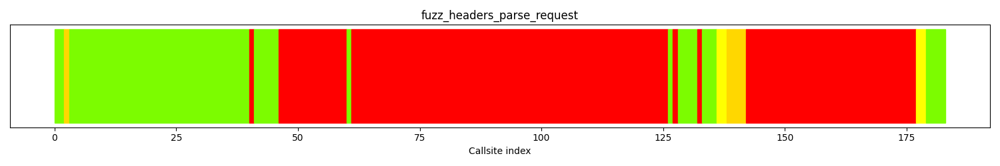
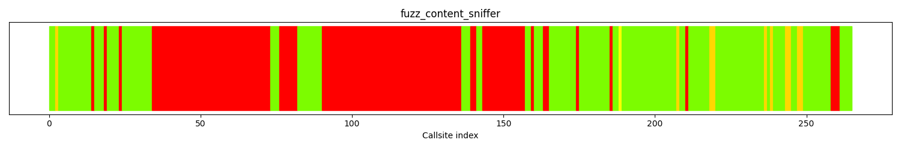
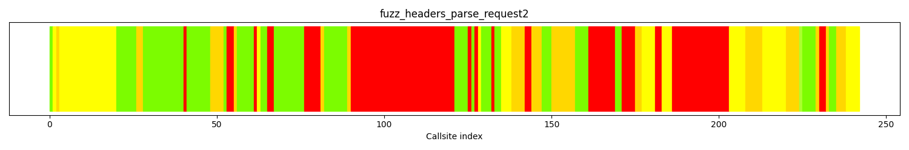

Warning:
The number of runtime covered functions are larger than the
number of reachable functions. This means that Fuzz Introspector found
there are more functions covered at runtime than what is considered
reachable based on the static analysis. This is a limitation in the
analysis as anything covered at runtime is by definition reachable by the
fuzzers.
This is likely due to a limitation in the static analysis. In this case, the
count of functions covered at runtime is the true value, which means this
is what should be considered "achieved" by the fuzzer.
Use the project functions table below to query all functions that were not covered at runtime.
The following table shows data about each function in the project. The functions included in this table correspond to all functions that exist in the executables of the fuzzers. As such, there may be functions that are from third-party libraries.
For further technical details on the meaning of columns in the below table, please see the Glossary .
| Func name | Functions filename | Args | Function call depth | Reached by Fuzzers | Runtime reached by Fuzzers | Combined reached by Fuzzers | Fuzzers runtime hit | Func lines hit % | I Count | BB Count | Cyclomatic complexity | Functions reached | Reached by functions | Accumulated cyclomatic complexity | Undiscovered complexity |
|---|
The calltree shows the control flow of the fuzzer. This is overlaid with coverage information to display how much of the potential code a fuzzer can reach is in fact covered at runtime. In the following there is a link to a detailed calltree visualisation as well as a bitmap showing a high-level view of the calltree. For further information about these topics please see the glossary for full calltree and calltree overview
Call tree overview bitmap:

The distribution of callsites in terms of coloring is
| Color | Runtime hitcount | Callsite count | Percentage |
|---|---|---|---|
| red | 0 | 36 | 22.2% |
| gold | [1:9] | 2 | 1.23% |
| yellow | [10:29] | 3 | 1.85% |
| greenyellow | [30:49] | 1 | 0.61% |
| lawngreen | 50+ | 120 | 74.0% |
| All colors | 162 | 100 |
The following nodes represent call sites where fuzz blockers occur.
| Amount of callsites blocked | Calltree index | Parent function | Callsite | Largest blocked function |
|---|---|---|---|---|
| 32 | 127 | parse_one_cookie | call site: 00127 | soup_cookie_domain_matches |
| 1 | 9 | parse_one_cookie | call site: 00009 | |
| 1 | 11 | parse_one_cookie | call site: 00011 | |
| 1 | 14 | parse_one_cookie | call site: 00014 | |
| 1 | 119 | parse_one_cookie | call site: 00119 | soup_cookie_set_same_site_policy |
| Function name | source code lines | source lines hit | percentage hit |
|---|
| filename | functions hit |
|---|---|
| fuzzing/fuzz_cookie_parse.c | 4 |
| fuzzing/fuzz.h | 1 |
| libsoup/cookies/soup-cookie.c | 40 |
| libsoup/soup-headers.c | 1 |
| libsoup/soup-date-utils.c | 24 |
| libsoup/soup-misc.c | 3 |
| libsoup/soup-uri-utils.c | 12 |
The calltree shows the control flow of the fuzzer. This is overlaid with coverage information to display how much of the potential code a fuzzer can reach is in fact covered at runtime. In the following there is a link to a detailed calltree visualisation as well as a bitmap showing a high-level view of the calltree. For further information about these topics please see the glossary for full calltree and calltree overview
Call tree overview bitmap:

The distribution of callsites in terms of coloring is
| Color | Runtime hitcount | Callsite count | Percentage |
|---|---|---|---|
| red | 0 | 2 | 11.1% |
| gold | [1:9] | 1 | 5.55% |
| yellow | [10:29] | 0 | 0.0% |
| greenyellow | [30:49] | 0 | 0.0% |
| lawngreen | 50+ | 15 | 83.3% |
| All colors | 18 | 100 |
The following nodes represent call sites where fuzz blockers occur.
| Amount of callsites blocked | Calltree index | Parent function | Callsite | Largest blocked function |
|---|---|---|---|---|
| 2 | 13 | soup_body_input_stream_http2_add_data | call site: 00013 |
| Function name | source code lines | source lines hit | percentage hit |
|---|
| filename | functions hit |
|---|---|
| fuzzing/fuzz_http2.c | 7 |
| fuzzing/fuzz.h | 1 |
| libsoup/http2/soup-body-input-stream-http2.c | 9 |
The calltree shows the control flow of the fuzzer. This is overlaid with coverage information to display how much of the potential code a fuzzer can reach is in fact covered at runtime. In the following there is a link to a detailed calltree visualisation as well as a bitmap showing a high-level view of the calltree. For further information about these topics please see the glossary for full calltree and calltree overview
Call tree overview bitmap:

The distribution of callsites in terms of coloring is
| Color | Runtime hitcount | Callsite count | Percentage |
|---|---|---|---|
| red | 0 | 110 | 60.1% |
| gold | [1:9] | 5 | 2.73% |
| yellow | [10:29] | 1 | 0.54% |
| greenyellow | [30:49] | 7 | 3.82% |
| lawngreen | 50+ | 60 | 32.7% |
| All colors | 183 | 100 |
The following nodes represent call sites where fuzz blockers occur.
| Amount of callsites blocked | Calltree index | Parent function | Callsite | Largest blocked function |
|---|---|---|---|---|
| 58 | 61 | soup_message_headers_append_common | call site: 00061 | parse_content_foo |
| 32 | 147 | soup_message_headers_get_list_common | call site: 00147 | soup_message_headers_remove |
| 11 | 41 | soup_message_headers_append_common | call site: 00041 | soup_header_name_from_string |
| 2 | 58 | soup_message_headers_append_common | call site: 00058 | |
| 2 | 144 | soup_message_headers_get_list_common | call site: 00144 | |
| 1 | 33 | is_valid_header_name | call site: 00033 | |
| 1 | 54 | is_valid_header_value | call site: 00054 | |
| 1 | 120 | soup_message_headers_append_internal | call site: 00120 | |
| 1 | 125 | soup_message_headers_append_internal | call site: 00125 | |
| 1 | 135 | soup_headers_parse_status_line | call site: 00135 |
| Function name | source code lines | source lines hit | percentage hit |
|---|
| filename | functions hit |
|---|---|
| fuzzing/fuzz_headers_parse_response.c | 6 |
| fuzzing/fuzz.h | 1 |
| libsoup/soup-message-headers.c | 45 |
| libsoup/soup-headers.c | 44 |
| libsoup/soup-header-names.c | 4 |
The calltree shows the control flow of the fuzzer. This is overlaid with coverage information to display how much of the potential code a fuzzer can reach is in fact covered at runtime. In the following there is a link to a detailed calltree visualisation as well as a bitmap showing a high-level view of the calltree. For further information about these topics please see the glossary for full calltree and calltree overview
Call tree overview bitmap:

The distribution of callsites in terms of coloring is
| Color | Runtime hitcount | Callsite count | Percentage |
|---|---|---|---|
| red | 0 | 8 | 13.5% |
| gold | [1:9] | 25 | 42.3% |
| yellow | [10:29] | 6 | 10.1% |
| greenyellow | [30:49] | 2 | 3.38% |
| lawngreen | 50+ | 18 | 30.5% |
| All colors | 59 | 100 |
The following nodes represent call sites where fuzz blockers occur.
| Amount of callsites blocked | Calltree index | Parent function | Callsite | Largest blocked function |
|---|---|---|---|---|
| 4 | 33 | get_maybe_default_port | call site: 00033 | |
| 2 | 18 | soup_uri_copy | call site: 00018 | |
| 2 | 46 | soup_uri_decode_data_uri | call site: 00046 |
| Function name | source code lines | source lines hit | percentage hit |
|---|
| filename | functions hit |
|---|---|
| fuzzing/fuzz_decode_data_uri.c | 6 |
| fuzzing/fuzz.h | 1 |
| libsoup/soup-uri-utils.c | 39 |
The calltree shows the control flow of the fuzzer. This is overlaid with coverage information to display how much of the potential code a fuzzer can reach is in fact covered at runtime. In the following there is a link to a detailed calltree visualisation as well as a bitmap showing a high-level view of the calltree. For further information about these topics please see the glossary for full calltree and calltree overview
Call tree overview bitmap:

The distribution of callsites in terms of coloring is
| Color | Runtime hitcount | Callsite count | Percentage |
|---|---|---|---|
| red | 0 | 5 | 10.4% |
| gold | [1:9] | 1 | 2.08% |
| yellow | [10:29] | 0 | 0.0% |
| greenyellow | [30:49] | 0 | 0.0% |
| lawngreen | 50+ | 42 | 87.5% |
| All colors | 48 | 100 |
The following nodes represent call sites where fuzz blockers occur.
| Amount of callsites blocked | Calltree index | Parent function | Callsite | Largest blocked function |
|---|---|---|---|---|
| 5 | 36 | parse_param_list | call site: 00036 |
| Function name | source code lines | source lines hit | percentage hit |
|---|
| filename | functions hit |
|---|---|
| fuzzing/fuzz_header_parsing.c | 4 |
| fuzzing/fuzz.h | 1 |
| libsoup/soup-headers.c | 29 |
The calltree shows the control flow of the fuzzer. This is overlaid with coverage information to display how much of the potential code a fuzzer can reach is in fact covered at runtime. In the following there is a link to a detailed calltree visualisation as well as a bitmap showing a high-level view of the calltree. For further information about these topics please see the glossary for full calltree and calltree overview
Call tree overview bitmap:

The distribution of callsites in terms of coloring is
| Color | Runtime hitcount | Callsite count | Percentage |
|---|---|---|---|
| red | 0 | 0 | 0.0% |
| gold | [1:9] | 3 | 6.52% |
| yellow | [10:29] | 1 | 2.17% |
| greenyellow | [30:49] | 0 | 0.0% |
| lawngreen | 50+ | 42 | 91.3% |
| All colors | 46 | 100 |
| Function name | source code lines | source lines hit | percentage hit |
|---|
| filename | functions hit |
|---|---|
| fuzzing/fuzz_date_time.c | 4 |
| fuzzing/fuzz.h | 1 |
| libsoup/soup-date-utils.c | 24 |
The calltree shows the control flow of the fuzzer. This is overlaid with coverage information to display how much of the potential code a fuzzer can reach is in fact covered at runtime. In the following there is a link to a detailed calltree visualisation as well as a bitmap showing a high-level view of the calltree. For further information about these topics please see the glossary for full calltree and calltree overview
Call tree overview bitmap:

The distribution of callsites in terms of coloring is
| Color | Runtime hitcount | Callsite count | Percentage |
|---|---|---|---|
| red | 0 | 117 | 63.9% |
| gold | [1:9] | 5 | 2.73% |
| yellow | [10:29] | 4 | 2.18% |
| greenyellow | [30:49] | 0 | 0.0% |
| lawngreen | 50+ | 57 | 31.1% |
| All colors | 183 | 100 |
The following nodes represent call sites where fuzz blockers occur.
| Amount of callsites blocked | Calltree index | Parent function | Callsite | Largest blocked function |
|---|---|---|---|---|
| 65 | 60 | is_valid_header_value | call site: 00060 | soup_message_headers_set |
| 35 | 141 | soup_message_headers_get_list_common | call site: 00141 | soup_message_headers_remove |
| 14 | 45 | soup_header_name_from_string | call site: 00045 | soup_message_headers_append_common |
| 1 | 39 | is_valid_header_name | call site: 00039 | |
| 1 | 126 | soup_message_headers_append_internal | call site: 00126 | |
| 1 | 131 | soup_message_headers_append_internal | call site: 00131 |
| Function name | source code lines | source lines hit | percentage hit |
|---|
| filename | functions hit |
|---|---|
| fuzzing/fuzz_headers_parse_request.c | 6 |
| fuzzing/fuzz.h | 1 |
| libsoup/soup-message-headers.c | 45 |
| libsoup/soup-headers.c | 43 |
| libsoup/soup-header-names.c | 4 |
The calltree shows the control flow of the fuzzer. This is overlaid with coverage information to display how much of the potential code a fuzzer can reach is in fact covered at runtime. In the following there is a link to a detailed calltree visualisation as well as a bitmap showing a high-level view of the calltree. For further information about these topics please see the glossary for full calltree and calltree overview
Call tree overview bitmap:

The distribution of callsites in terms of coloring is
| Color | Runtime hitcount | Callsite count | Percentage |
|---|---|---|---|
| red | 0 | 119 | 44.9% |
| gold | [1:9] | 10 | 3.77% |
| yellow | [10:29] | 1 | 0.37% |
| greenyellow | [30:49] | 0 | 0.0% |
| lawngreen | 50+ | 135 | 50.9% |
| All colors | 265 | 100 |
The following nodes represent call sites where fuzz blockers occur.
| Amount of callsites blocked | Calltree index | Parent function | Callsite | Largest blocked function |
|---|---|---|---|---|
| 46 | 89 | parse_content_foo | call site: 00089 | soup_header_parse_semi_param_list |
| 39 | 33 | set_content_foo | call site: 00033 | sanitize_filename |
| 14 | 142 | soup_message_headers_append_common | call site: 00142 | soup_header_name_from_string |
| 6 | 75 | soup_message_headers_remove_common | call site: 00075 | soup_message_headers_set |
| 3 | 257 | soup_content_sniffer_sniff | call site: 00257 | sniff_text_or_binary |
| 2 | 138 | soup_message_headers_set | call site: 00138 | |
| 2 | 162 | soup_message_headers_append_common | call site: 00162 | |
| 1 | 13 | is_host_valid | call site: 00013 | |
| 1 | 17 | is_host_valid | call site: 00017 | |
| 1 | 22 | soup_uri_is_valid | call site: 00022 | |
| 1 | 158 | is_valid_header_value | call site: 00158 | |
| 1 | 173 | soup_message_headers_get_content_type | call site: 00173 | parse_content_foo |
| Function name | source code lines | source lines hit | percentage hit |
|---|
| filename | functions hit |
|---|---|
| fuzzing/fuzz_content_sniffer.c | 12 |
| fuzzing/fuzz.h | 1 |
| libsoup/content-sniffer/soup-content-sniffer.c | 24 |
| libsoup/soup-message.c | 8 |
| libsoup/soup-uri-utils.c | 10 |
| libsoup/soup-message-headers.c | 43 |
| libsoup/soup-headers.c | 39 |
| libsoup/soup-header-names.c | 4 |
The calltree shows the control flow of the fuzzer. This is overlaid with coverage information to display how much of the potential code a fuzzer can reach is in fact covered at runtime. In the following there is a link to a detailed calltree visualisation as well as a bitmap showing a high-level view of the calltree. For further information about these topics please see the glossary for full calltree and calltree overview
Call tree overview bitmap:

The distribution of callsites in terms of coloring is
| Color | Runtime hitcount | Callsite count | Percentage |
|---|---|---|---|
| red | 0 | 80 | 33.0% |
| gold | [1:9] | 40 | 16.5% |
| yellow | [10:29] | 46 | 19.0% |
| greenyellow | [30:49] | 1 | 0.41% |
| lawngreen | 50+ | 75 | 30.9% |
| All colors | 242 | 100 |
The following nodes represent call sites where fuzz blockers occur.
| Amount of callsites blocked | Calltree index | Parent function | Callsite | Largest blocked function |
|---|---|---|---|---|
| 31 | 89 | parse_list | call site: 00089 | soup_header_parse_semi_param_list |
| 17 | 185 | soup_message_headers_get_content_disposition | call site: 00185 | sanitize_filename |
| 8 | 160 | soup_message_headers_remove | call site: 00160 | soup_message_headers_remove_common |
| 5 | 75 | parse_content_foo | call site: 00075 | soup_header_parse_semi_param_list |
| 4 | 170 | find_uncommon_header | call site: 00170 | |
| 2 | 52 | soup_message_headers_get_one_common | call site: 00052 | find_last_uncommon_header |
| 2 | 64 | soup_message_headers_append_common | call site: 00064 | |
| 2 | 141 | soup_message_headers_get_list_common | call site: 00141 | |
| 2 | 180 | soup_message_headers_get_content_type | call site: 00180 | parse_content_foo |
| 2 | 229 | soup_message_headers_get_ranges_internal | call site: 00229 | |
| 1 | 39 | is_valid_header_name | call site: 00039 | |
| 1 | 60 | is_valid_header_value | call site: 00060 |
| Function name | source code lines | source lines hit | percentage hit |
|---|
| filename | functions hit |
|---|---|
| fuzzing/fuzz_headers_parse_request2.c | 14 |
| fuzzing/fuzz.h | 1 |
| libsoup/soup-message-headers.c | 61 |
| libsoup/soup-headers.c | 43 |
| libsoup/soup-header-names.c | 4 |
The following table shows a list of functions that are optimal targets. Optimal targets are identified by finding the functions that in combination, yield a high code coverage.
| Func name | Functions filename | Arg count | Args | Function depth | hitcount | instr count | bb count | cyclomatic complexity | Reachable functions | Incoming references | total cyclomatic complexity | Unreached complexity |
|---|---|---|---|---|---|---|---|---|---|---|---|---|
do_request_test
|
/src/libsoup/tests/request-body-test.c | 1 | ['gconstpointer'] | 14 | 0 | 55 | 8 | 7 | 557 | 0 | 577 | 418 |
test_close_clean_client_soup
|
/src/libsoup/tests/websocket-test.c | 2 | ['Test*', 'gconstpointer'] | 13 | 0 | 8 | 2 | 3 | 412 | 0 | 429 | 247 |
test_deflate_negotiate_direct
|
/src/libsoup/tests/websocket-test.c | 2 | ['Test*', 'gconstpointer'] | 7 | 0 | 61 | 5 | 7 | 205 | 0 | 279 | 116 |
auth_got_headers
|
/src/libsoup/libsoup/auth/soup-auth-manager.c | 2 | ['SoupMessage*', 'gpointer'] | 8 | 0 | 23 | 5 | 5 | 162 | 0 | 194 | 99 |
soup_websocket_connection_read
|
/src/libsoup/libsoup/websocket/soup-websocket-connection.c | 1 | ['SoupWebsocketConnection*'] | 18 | 0 | 33 | 7 | 10 | 102 | 1 | 157 | 95 |
on_frame_recv_callback
|
/src/libsoup/libsoup/http2/soup-client-message-io-http2.c | 3 | ['nghttp2_session*', 'nghttp2_frame*', 'gpointer'] | 13 | 0 | 98 | 26 | 30 | 218 | 0 | 395 | 90 |
sync_multipart_handling_cb
|
/src/libsoup/tests/multipart-test.c | 3 | ['GObject*', 'GAsyncResult*', 'gpointer'] | 12 | 0 | 34 | 5 | 8 | 487 | 0 | 556 | 74 |
Implementing fuzzers that target the above functions will improve reachability such that it becomes:
If you implement fuzzers for these functions, the status of all functions in the project will be:
| Func name | Functions filename | Args | Function call depth | Reached by Fuzzers | Runtime reached by Fuzzers | Combined reached by Fuzzers | Fuzzers runtime hit | Func lines hit % | I Count | BB Count | Cyclomatic complexity | Functions reached | Reached by functions | Accumulated cyclomatic complexity | Undiscovered complexity |
|---|
This sections provides heuristics that can be used as input to a fuzz engine when running a given fuzz target. The current focus is on providing input that is usable by libFuzzer.
Use this with the libFuzzer -dict=DICT.file flag
Use one of these functions as input to libfuzzer with flag: -focus_function name
-focus_function=['parse_one_cookie']Use this with the libFuzzer -dict=DICT.file flag
Use one of these functions as input to libfuzzer with flag: -focus_function name
-focus_function=['soup_body_input_stream_http2_add_data']Use this with the libFuzzer -dict=DICT.file flag
Use one of these functions as input to libfuzzer with flag: -focus_function name
-focus_function=['soup_message_headers_append_common', 'soup_message_headers_get_list_common', 'is_valid_header_name', 'is_valid_header_value', 'soup_message_headers_append_internal', 'soup_headers_parse_status_line']Use this with the libFuzzer -dict=DICT.file flag
Use one of these functions as input to libfuzzer with flag: -focus_function name
-focus_function=['get_maybe_default_port', 'soup_uri_copy', 'soup_uri_decode_data_uri']Use this with the libFuzzer -dict=DICT.file flag
Use one of these functions as input to libfuzzer with flag: -focus_function name
-focus_function=['parse_param_list']Use this with the libFuzzer -dict=DICT.file flag
Use this with the libFuzzer -dict=DICT.file flag
Use one of these functions as input to libfuzzer with flag: -focus_function name
-focus_function=['is_valid_header_value', 'soup_message_headers_get_list_common', 'soup_header_name_from_string', 'is_valid_header_name', 'soup_message_headers_append_internal']Use this with the libFuzzer -dict=DICT.file flag
Use one of these functions as input to libfuzzer with flag: -focus_function name
-focus_function=['parse_content_foo', 'set_content_foo', 'soup_message_headers_append_common', 'soup_message_headers_remove_common', 'soup_content_sniffer_sniff', 'soup_message_headers_set', 'is_host_valid', 'soup_uri_is_valid']Use this with the libFuzzer -dict=DICT.file flag
Use one of these functions as input to libfuzzer with flag: -focus_function name
-focus_function=['parse_list', 'soup_message_headers_get_content_disposition', 'soup_message_headers_remove', 'parse_content_foo', 'find_uncommon_header', 'soup_message_headers_get_one_common', 'soup_message_headers_append_common', 'soup_message_headers_get_list_common', 'soup_message_headers_get_content_type', 'soup_message_headers_get_ranges_internal']This section shows analysis of runtime coverage data.
For futher technical details on how this section is generated, please see the Glossary .
| Func name | Function total lines | Lines covered at runtime | percentage covered | Reached by fuzzers |
|---|---|---|---|---|
| soup_message_set_connection | 59 | 7 | 11.86% | ['fuzz_content_sniffer'] |
| soup_message_set_property | 32 | 11 | 34.37% | ['fuzz_content_sniffer'] |
The below fuzzers are templates and suggestions for how to target the set of optimal functions above
#include "ada_fuzz_header.h"
int LLVMFuzzerTestOneInput(const uint8_t *data, size_t size) {
af_safe_gb_init(data, size);
/* target do_request_test */
UNKNOWN_TYPE unknown_0;
do_request_test(unknown_0);
af_safe_gb_cleanup();
}
#include "ada_fuzz_header.h"
int LLVMFuzzerTestOneInput(const uint8_t *data, size_t size) {
af_safe_gb_init(data, size);
/* target test_close_clean_client_soup */
UNKNOWN_TYPE unknown_1;
UNKNOWN_TYPE unknown_2;
test_close_clean_client_soup(unknown_1, unknown_2);
/* target test_deflate_negotiate_direct */
UNKNOWN_TYPE unknown_3;
UNKNOWN_TYPE unknown_4;
test_deflate_negotiate_direct(unknown_3, unknown_4);
af_safe_gb_cleanup();
}
#include "ada_fuzz_header.h"
int LLVMFuzzerTestOneInput(const uint8_t *data, size_t size) {
af_safe_gb_init(data, size);
/* target auth_got_headers */
UNKNOWN_TYPE unknown_5;
UNKNOWN_TYPE unknown_6;
auth_got_headers(unknown_5, unknown_6);
af_safe_gb_cleanup();
}
#include "ada_fuzz_header.h"
int LLVMFuzzerTestOneInput(const uint8_t *data, size_t size) {
af_safe_gb_init(data, size);
/* target soup_websocket_connection_read */
UNKNOWN_TYPE unknown_7;
soup_websocket_connection_read(unknown_7);
af_safe_gb_cleanup();
}
#include "ada_fuzz_header.h"
int LLVMFuzzerTestOneInput(const uint8_t *data, size_t size) {
af_safe_gb_init(data, size);
/* target on_frame_recv_callback */
UNKNOWN_TYPE unknown_8;
UNKNOWN_TYPE unknown_9;
UNKNOWN_TYPE unknown_10;
on_frame_recv_callback(unknown_8, unknown_9, unknown_10);
af_safe_gb_cleanup();
}
#include "ada_fuzz_header.h"
int LLVMFuzzerTestOneInput(const uint8_t *data, size_t size) {
af_safe_gb_init(data, size);
/* target sync_multipart_handling_cb */
UNKNOWN_TYPE unknown_11;
UNKNOWN_TYPE unknown_12;
UNKNOWN_TYPE unknown_13;
sync_multipart_handling_cb(unknown_11, unknown_12, unknown_13);
af_safe_gb_cleanup();
}
This section shows which files and directories are considered in this report. The main reason for showing this is fuzz introspector may include more code in the reasoning than is desired. This section helps identify if too many files/directories are included, e.g. third party code, which may be irrelevant for the threat model. In the event too much is included, fuzz introspector supports a configuration file that can exclude data from the report. See the following link for more information on how to create a config file: link
| Source file | Reached by | Covered by |
|---|---|---|
| /src/libsoup/tests/ntlm-test.c | [] | [] |
| /src/libsoup/tests/timeout-test.c | [] | [] |
| /src/libsoup/tests/range-test.c | [] | [] |
| /src/libsoup/libsoup/soup-form.c | [] | [] |
| /src/libsoup/tests/session-test.c | [] | [] |
| /src/libsoup/tests/http2-test.c | [] | [] |
| /src/libsoup/tests/streaming-test.c | [] | [] |
| /src/libsoup/libsoup/server/http1/soup-server-message-io-http1.c | [] | [] |
| /src/libsoup/tests/cache-test.c | [] | [] |
| /src/libsoup/libsoup/content-decoder/soup-content-processor.c | [] | [] |
| /src/libsoup/libsoup/websocket/soup-websocket-connection.c | [] | [] |
| /src/libsoup/fuzzing/fuzz_headers_parse_request.c | ['fuzz_headers_parse_request'] | ['fuzz_headers_parse_request'] |
| /src/libsoup/libsoup/auth/soup-auth-digest.c | [] | [] |
| /src/libsoup/tests/request-body-test.c | [] | [] |
| /src/libsoup/libsoup/soup-multipart-input-stream.c | [] | [] |
| /src/libsoup/examples/simple-proxy.c | [] | [] |
| /src/libsoup/tests/server-mem-limit-test.c | [] | [] |
| /src/libsoup/tests/continue-test.c | [] | [] |
| /src/libsoup/fuzzing/fuzz_cookie_parse.c | ['fuzz_cookie_parse'] | ['fuzz_cookie_parse'] |
| /src/libsoup/libsoup/auth/soup-auth.c | [] | [] |
| /src/libsoup/tests/ws-test-helper.c | [] | [] |
| /src/libsoup/libsoup/soup-filter-input-stream.c | [] | [] |
| /src/libsoup/tests/server-auth-test.c | [] | [] |
| /src/libsoup/libsoup/server/soup-server.c | [] | [] |
| /src/libsoup/libsoup/websocket/soup-websocket-extension-deflate.c | [] | [] |
| /src/libsoup/libsoup/soup-client-message-io.c | [] | [] |
| /src/libsoup/libsoup/server/soup-path-map.c | [] | [] |
| /src/libsoup/libsoup/hsts/soup-hsts-policy.c | [] | [] |
| /src/libsoup/libsoup/soup-message-metrics.c | [] | [] |
| /src/libsoup/tests/http2-body-stream-test.c | [] | [] |
| /src/libsoup/libsoup/hsts/soup-hsts-enforcer.c | [] | [] |
| /src/libsoup/libsoup/soup-method.h | [] | [] |
| /src/libsoup/libsoup/soup-session-feature.c | [] | [] |
| /src/libsoup/tests/server-test.c | [] | [] |
| /src/libsoup/libsoup/websocket/soup-websocket.c | [] | [] |
| /src/libsoup/libsoup/soup-uri-utils.c | ['fuzz_cookie_parse', 'fuzz_decode_data_uri', 'fuzz_content_sniffer'] | ['fuzz_decode_data_uri', 'fuzz_content_sniffer'] |
| /src/libsoup/libsoup/http1/soup-body-output-stream.c | [] | [] |
| /src/libsoup/tests/misc-test.c | [] | [] |
| /src/libsoup/libsoup/server/soup-listener.c | [] | [] |
| /src/libsoup/examples/unix-socket-server.c | [] | [] |
| /src/libsoup/libsoup/soup-socket-properties.c | [] | [] |
| /src/libsoup/libsoup/auth/soup-auth-basic.c | [] | [] |
| /src/libsoup/tests/forms-test.c | [] | [] |
| /src/libsoup/libsoup/soup-logger-input-stream.c | [] | [] |
| /src/libsoup/libsoup/soup-headers.c | ['fuzz_cookie_parse', 'fuzz_headers_parse_response', 'fuzz_header_parsing', 'fuzz_headers_parse_request', 'fuzz_content_sniffer', 'fuzz_headers_parse_request2'] | ['fuzz_headers_parse_response', 'fuzz_header_parsing', 'fuzz_headers_parse_request', 'fuzz_headers_parse_request2'] |
| /src/libsoup/libsoup/soup-tld.c | [] | [] |
| /src/libsoup/libsoup/cache/soup-cache.c | [] | [] |
| /src/libsoup/libsoup/soup-date-utils.c | ['fuzz_cookie_parse', 'fuzz_date_time'] | ['fuzz_cookie_parse', 'fuzz_date_time'] |
| /src/libsoup/fuzzing/fuzz_header_parsing.c | ['fuzz_header_parsing'] | ['fuzz_header_parsing'] |
| /src/libsoup/libsoup/soup-misc.h | [] | [] |
| /src/libsoup/tests/multithread-test.c | [] | [] |
| /src/libsoup/libsoup/soup-session-feature-private.h | [] | [] |
| /src/libsoup/libsoup/http1/soup-message-io-data.c | [] | [] |
| /src/libsoup/libsoup/soup-message.c | ['fuzz_content_sniffer'] | ['fuzz_content_sniffer'] |
| /src/libsoup/libsoup/http1/soup-message-io-source.c | [] | [] |
| /src/libsoup/tests/logger-test.c | [] | [] |
| /src/libsoup/libsoup/content-decoder/soup-brotli-decompressor.c | [] | [] |
| /src/libsoup/tests/auth-test.c | [] | [] |
| /src/libsoup/fuzzing/fuzz.h | ['fuzz_cookie_parse', 'fuzz_http2', 'fuzz_headers_parse_response', 'fuzz_decode_data_uri', 'fuzz_header_parsing', 'fuzz_date_time', 'fuzz_headers_parse_request', 'fuzz_content_sniffer', 'fuzz_headers_parse_request2'] | ['fuzz_cookie_parse', 'fuzz_http2', 'fuzz_headers_parse_response', 'fuzz_decode_data_uri', 'fuzz_header_parsing', 'fuzz_date_time', 'fuzz_headers_parse_request', 'fuzz_content_sniffer', 'fuzz_headers_parse_request2'] |
| /src/libsoup/tests/cookies-test.c | [] | [] |
| /src/libsoup/libsoup/cookies/soup-cookie-jar-db.c | [] | [] |
| /src/libsoup/libsoup/soup-http2-utils.c | [] | [] |
| /src/libsoup/libsoup/server/soup-server-connection.c | [] | [] |
| /src/libsoup/libsoup/content-sniffer/soup-content-sniffer-stream.c | [] | [] |
| /src/libsoup/tests/date-test.c | [] | [] |
| /src/libsoup/libsoup/server/http2/soup-server-message-io-http2.c | [] | [] |
| /src/libsoup/tests/mock-pkcs11.c | [] | [] |
| /src/libsoup/libsoup/cookies/soup-cookie.c | ['fuzz_cookie_parse'] | ['fuzz_cookie_parse'] |
| /src/libsoup/tests/tld-test.c | [] | [] |
| /src/libsoup/tests/samesite-test.c | [] | [] |
| /src/libsoup/libsoup/soup-client-input-stream.c | [] | [] |
| /src/libsoup/libsoup/content-decoder/soup-converter-wrapper.c | [] | [] |
| /src/libsoup/libsoup/soup-status.h | [] | [] |
| /src/libsoup/tests/coding-test.c | [] | [] |
| /src/libsoup/libsoup/server/soup-auth-domain-basic.c | [] | [] |
| /src/libsoup/tests/unix-socket-test.c | [] | [] |
| /src/libsoup/tests/header-parsing-test.c | [] | [] |
| /src/libsoup/examples/simple-httpd.c | [] | [] |
| /src/libsoup/fuzzing/fuzz_headers_parse_request2.c | ['fuzz_headers_parse_request2'] | ['fuzz_headers_parse_request2'] |
| /src/libsoup/fuzzing/fuzz_http2.c | ['fuzz_http2'] | ['fuzz_http2'] |
| /src/libsoup/libsoup/hsts/soup-hsts-enforcer-db.c | [] | [] |
| /src/libsoup/libsoup/auth/soup-tls-interaction.c | [] | [] |
| /src/libsoup/libsoup/soup-header-names.c | ['fuzz_headers_parse_response', 'fuzz_headers_parse_request', 'fuzz_content_sniffer', 'fuzz_headers_parse_request2'] | ['fuzz_headers_parse_response', 'fuzz_headers_parse_request', 'fuzz_headers_parse_request2'] |
| /src/libsoup/tests/no-ssl-test.c | [] | [] |
| /src/libsoup/fuzzing/fuzz_date_time.c | ['fuzz_date_time'] | ['fuzz_date_time'] |
| /src/libsoup/fuzzing/fuzz_headers_parse_response.c | ['fuzz_headers_parse_response'] | ['fuzz_headers_parse_response'] |
| /src/libsoup/libsoup/soup-message-queue-item.c | [] | [] |
| /src/libsoup/tests/redirect-test.c | [] | [] |
| /src/libsoup/libsoup/soup-io-stream.c | [] | [] |
| /src/libsoup/examples/unix-socket-client.c | [] | [] |
| /src/libsoup/libsoup/http1/soup-body-input-stream.c | [] | [] |
| /src/libsoup/tests/proxy-test.c | [] | [] |
| /src/libsoup/tests/pkcs11/pkcs11.h | [] | [] |
| /src/libsoup/libsoup/websocket/soup-websocket-extension.c | [] | [] |
| /src/libsoup/libsoup/soup-status.c | [] | [] |
| /src/libsoup/libsoup/server/soup-auth-domain.c | [] | [] |
| /src/libsoup/libsoup/soup-multipart.c | [] | [] |
| /src/libsoup/fuzzing/fuzz_decode_data_uri.c | ['fuzz_decode_data_uri'] | ['fuzz_decode_data_uri'] |
| /src/libsoup/tests/hsts-db-test.c | [] | [] |
| /src/libsoup/tests/test-utils.h | [] | [] |
| /src/libsoup/libsoup/http2/soup-client-message-io-http2.c | [] | [] |
| /src/libsoup/libsoup/http1/soup-message-io-data.h | [] | [] |
| /src/libsoup/libsoup/gconstructor.h | [] | [] |
| /src/libsoup/libsoup/server/soup-server-message.c | [] | [] |
| /src/libsoup/tests/autobahn/autobahn-test.c | [] | [] |
| /src/libsoup/libsoup/soup-misc.c | ['fuzz_cookie_parse'] | [] |
| /src/libsoup/tests/multipart-test.c | [] | [] |
| /src/libsoup/libsoup/server/soup-message-body.c | [] | [] |
| /src/libsoup/tests/websocket-test.c | [] | [] |
| /src/libsoup/libsoup/soup-connection-manager.c | [] | [] |
| /src/libsoup/libsoup/auth/soup-auth-manager.c | [] | [] |
| /src/libsoup/tests/context-test.c | [] | [] |
| /src/libsoup/libsoup/soup-message-metrics-private.h | [] | [] |
| /src/libsoup/libsoup/content-decoder/soup-content-decoder.c | [] | [] |
| /src/libsoup/libsoup/server/soup-auth-domain-digest.c | [] | [] |
| /src/libsoup/tests/uri-parsing-test.c | [] | [] |
| /src/libsoup/libsoup/soup-logger.c | [] | [] |
| /src/libsoup/libsoup/cookies/soup-cookie-jar.c | [] | [] |
| /src/libsoup/libsoup/auth/soup-connection-auth.c | [] | [] |
| /src/libsoup/libsoup/cache/soup-cache-input-stream.c | [] | [] |
| /src/libsoup/libsoup/server/soup-server-message-io.c | [] | [] |
| /src/libsoup/libsoup/http1/soup-client-message-io-http1.c | [] | [] |
| /src/libsoup/libsoup/http2/soup-body-input-stream-http2.c | ['fuzz_http2'] | ['fuzz_http2'] |
| /src/libsoup/libsoup/cache/soup-cache-client-input-stream.c | [] | [] |
| /src/libsoup/libsoup/soup-version.c | [] | [] |
| /src/libsoup/tests/hsts-test.c | [] | [] |
| /src/libsoup/libsoup/soup-connection.c | [] | [] |
| /src/libsoup/examples/get.c | [] | [] |
| /src/libsoup/tests/test-utils.c | [] | [] |
| /src/libsoup/libsoup/soup-types.h | [] | [] |
| /src/libsoup/tests/connection-test.c | [] | [] |
| /src/libsoup/libsoup/websocket/soup-websocket-extension-manager.c | [] | [] |
| /src/libsoup/tests/brotli-decompressor-test.c | [] | [] |
| /src/libsoup/tests/chunk-io-test.c | [] | [] |
| /src/libsoup/tests/sniffing-test.c | [] | [] |
| /src/libsoup/fuzzing/fuzz_content_sniffer.c | ['fuzz_content_sniffer'] | ['fuzz_content_sniffer'] |
| /src/libsoup/libsoup/content-sniffer/soup-content-sniffer.c | ['fuzz_content_sniffer'] | ['fuzz_content_sniffer'] |
| /src/libsoup/libsoup/soup-init.c | [] | [] |
| /src/libsoup/libsoup/soup-http2-utils.h | [] | [] |
| /src/libsoup/libsoup/soup-message-headers.c | ['fuzz_headers_parse_response', 'fuzz_headers_parse_request', 'fuzz_content_sniffer', 'fuzz_headers_parse_request2'] | ['fuzz_headers_parse_response', 'fuzz_headers_parse_request', 'fuzz_content_sniffer', 'fuzz_headers_parse_request2'] |
| /src/libsoup/libsoup/cookies/soup-cookie-jar-text.c | [] | [] |
| /src/libsoup/libsoup/soup-session.c | [] | [] |
| /src/libsoup/tests/ssl-test.c | [] | [] |
| /src/libsoup/libsoup/auth/soup-auth-ntlm.c | [] | [] |
| /src/libsoup/libsoup/auth/soup-auth-negotiate.c | [] | [] |
| Directory |
|---|
| /src/libsoup/libsoup/server/http1/ |
| /src/libsoup/libsoup/hsts/ |
| /src/libsoup/libsoup/server/http2/ |
| /src/libsoup/libsoup/content-decoder/ |
| /src/libsoup/libsoup/http1/ |
| /src/libsoup/libsoup/server/ |
| /src/libsoup/tests/ |
| /src/libsoup/libsoup/cache/ |
| /src/libsoup/libsoup/cookies/ |
| /src/libsoup/libsoup/http2/ |
| /src/libsoup/tests/autobahn/ |
| /src/libsoup/libsoup/auth/ |
| /src/libsoup/fuzzing/ |
| /src/libsoup/libsoup/websocket/ |
| /src/libsoup/libsoup/ |
| /src/libsoup/libsoup/content-sniffer/ |
| /src/libsoup/examples/ |
| /src/libsoup/tests/pkcs11/ |
This section shows a list of 3rd party function calls and their relative coverage information. By static analysis of the target project code, all of the 3rd party function call and their caller information, including the source file and line number that initiate the call are captured. The caller source code file and line number are shown in column 2 while column 1 is the function name of the 3rd party function call. Each occurrent of the 3rd party function call will occuply a separate row. Column 3 of each row indicate if the 3rd party call in the source file line is unreachable. Column 4 lists all fuzzers that have covered that particular system call in that specific location (source file and line)during their dynamic fuzzing.
| Target sink | Callsite location | Reached by fuzzer | Covered by Fuzzers |
|---|
This sections shows the raw data that is used to produce this report. This is mainly used for further processing and developer debugging.